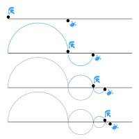

Zeno's Paradoxes
Calculus required continuity and continuity was supposed to require the infinitely little;
but no one could discover what the infinitely little might be. — Bertrand Russell.
Although in my opinion and the opinion of many other mathematicians out there, this paradox has
been resolved by modern calculus. It is however, still fun to play around with the logic of a man who set out to prove
that motion is just an illusion. Yes, motion… every single one of those calorie buring walks you've taken,
the countless motion questions your physics teacher made you solve… all an illusion. But don't be so quick
to dismiss this as another pitfall some ancient philosopher has drowned in by thinking outside the paradigm of
modern science, because this dude had pretty convincing argument.
Achilles and the Torotise
The Achilles and the Tortoise paradox describes a race between Achilles (any fast runner really) and a tortoise
(a much slower runner). Say the tortoise gets a head start of around 100m and each runner maintains a constant speed
throughout the race. Eventually, at some finite time, Achilles would reach the point where the tortoise started
(he has traveled 100m). But by this time the tortoise would have traveled some finite distance δ. Consequently,
the tortoise is now δ meters ahead of Achilles. Hmm! So the tortoise is still ahead. After another finite time Achilles
would have traveled some extra δ meters, which means he is now where the tortoise was the last time.
In that same finite time, the tortoise would have traveled another finite distance δ1.
The tortoise is still ahead. Quite frankly, we can continue this process infinitely. Logically, we can
now conclude that in a race, a fast runner can never take the lead from a slower runner. WAIT WHAT!!!

Achilles and the Tortoise
Dichotomy Paradox
This one is quite simple. Suppose you want to take a calorie burning walk of 100 meters. Before getting to the 100 meter
mark you would first have to get to the 50 meter mark. No problem right? But to get to the 50 meter mark you would first
have to get to the 25 meter mark. To get to the 25 meter mark you need to get to the 12.5 meter mark. Now it's beginning
to seem like you should just stick with pizza. Maybe you should because we can, theoretically, continue to bisect the
distance you would need to travel infinitely. In effect you would need to complete an infinite number of tasks to get
to the 100 meter mark. You should definitely stick with pizza.
Dichotomy
 Total number of Points you would have to reach
Total number of Points you would have to reach
Anyway, since people have a tendency to not be able to complete an infinite amount of tasks,
it's safe to conclude that nothing and no one could possibly move in this universe.
The Arrow in Flight
The arrow in flight paradox presents a thought about an arrow in motion. In any duration-less instance
of time where no time elapses, the arrow is not moving to where it is not because no time elapses and
the arrow isn't moving to where it currently is because it is already there. Since all of time is made
of instances, therefore, motion is impossible.
Resolution
Most definitely, there is some error in these arguments (try moving around, just to make sure).
But the question is ‘Where?’ All of these paradoxes are related in a way that we’ll discuss later on.
For now, let’s start with the last because it’s a problem that’s plagued my mind and probably the minds
of many physics students out there: ‘Instantaneous Velocity’. How can any object possibly have any
velocity (described by the ratio of change in distance to change in time) in an instant where time
doesn’t change?
In science, to get the right answers we need to ask the right questions.
Is it actually possible to have a single instance of time? That’s the relevant question
here. If time came in discrete indivisible units then it would be reasonable to pick out
one of these units as a single instance as one would say a water molecule is a single instance
of water or a sand grain is a single instance of bucket of sand. But time as we know it is
infinitely divisible; no matter how small a unit we pick we can always go smaller. We could
say a single instance of time is ∆t=0 that would mean that if we added a million or a quadrillion
instances together, we would still get zero seconds. ∆t=0 is not quite an accurate description of
a single instance of time. But then how do we define a single instance of time? What do physicists
mean when they say ‘instantaneous velocity’? Well an instance of time is actually represented by a
theoretical number i.e. you can’t write it down, an infinitesimal number. Think of it as the closest
possible number to zero while bearing in mind that any number you think of that isn’t zero can
always get closer to zero. So when defining velocity we take the limit of ∆t as it tends
towards zero but never actually zero.

For deeper understanding, we could compare an infinitesimal number to transcendental numbers.
Given a number line, there is no known scientific method to get a single point that accurately
represents the transcendental number, π on the number line. All we can ever have is a range that
we know for sure that π falls in between. To say 3.142 is an approximation of π simply means we
know π falls in the range (3.1410, 3.142) with an error of δε=0.001. We could improve our
approximation by adding more digits of precision and consequently reducing the error δε. In the same
regard, we could say π is accurately represented when we take the limit of δε.

If the idea of limits never quite sinks in, no shame, it took some the smartest mathematicians
over 150 years to formally define the limit of a continuous function.
To move on to Dichotomy and Achilles and Tortoise, we must first realize that these two
paradoxes are based on exactly the same idea, endlessly dividing distances. Because we keep
reducing the distance Achilles travels in each iteration, we can continue forever without ever
catching up with the tortoise. Now compare that to this version of the Dichotomy paradox: First we get
to the half way point, then to the half way point of the remaining distance, then the halfway point of
the remaining distance and on and on forever without ever getting to the final point. See, exactly the same idea.
There isn’t much to these two paradoxes other than the fact that the modern mathematician and Zeno disagree
on what is mathematically computable. Given a continuous function that describes the Instantaneous velocity of
an object with respect to time f(t)[which Zeno can’t comprehend anyway]. We can easily find the distance travelled
after a certain time by integrating over the elapsed time [by using the idea of limits and adding all infinitesimal
distance travelled per infinitesimal unit of time]. This means we can state accurately, the exact distance Achilles
needs to travel to take the lead from the tortoise and the time it would take to finally complete your walk.
The development of limits of a continuous function might have taken us 150 years, but it was 150 years well spent
because it gave us the power to compute infinite sums of converging functions and as well as being the driving
force in the development of infinitesimal calculus. The inability to visualise infinity in any form is a defect
common to all humans but like a blind man uses echo location to navigate his surroundings, we use mathematics to
compute ideas we cannot comprehend. This isn’t an uncommon occurrence in mathematics as Benjamin Peirce, a 19-th
century philosopher, mathematician and Harvard professor stated after proving Euler’s Identity: “it is absolutely
paradoxical. We cannot understand it, and we don't know what it means, but we have proved it, and therefore we know
it must be the truth.”
Fourth Dimension
The 4D style, or cosmic comics and relativistic humor, is based on Einstein's theory of relativity
and I came up with it 20 years ago.
4D works use the idea of the fourth dimension and time,
playing on such surrealistic and amazing subjects as motion relativity, space curvature and time dilation.
— Javad Alizadeh
Suppose our universe had four spatial dimensions and were only able to sense three, how can
comprehend the world of a being that perceives all four dimensions? Could we experience such a
world far beyond our reach? Will such a being even be able to explain exactly what it is that
we are missing? Well a ton of mathematicians have sort to answer these questions using simple logic
and analogy…oh I missed a step: “What is the Fourth Spatial Dimension?”
We shall begin our journey to unravel the mysteries of the fourth dimension from the zero-th dimension.
This is just a dimensionless point in space. No size what so ever, just a point. Not of much use
in our journey so we’ll just move on.
A little bit more eventful though is the one-th dimension – A zero thickness line that
extends infinitely in both directions. An object confined to move within this line is said to exist
within a one-dimensional space. To keep track of the object’s movement we’ll mark a point on the line
and call it the origin, we shall determine the position of the object relative to this point and we’ll
call the line the abscissa or simply ‘x’.
An object constrainded to a single dimension movement
A 2-dimensional space. Well simply imagine a similar line perpendicular to the original and
intersecting at the origin. The object can now move along both dimensions in what is a perfect
plane. We’ll call the new line the ordinate or ‘y’. And now, the position of any object in the
scene can be accurately described by two numbers: 'x' and 'y'.
An object constrainded to two dimensional movement
A 3-dimensional space — home sweet home — has another line ‘z’ intersecting the previous two lines at the
origin and is also perpendicular to both lines. This allows the object to move along three different axes
which defines everything we know and understand.
An object constrainded to three dimensional movement
A 4-dimensional space, what happens when we try to construct another line that is perpendicular to
all three lines? You would be quick to realize that this is a square-the-circle task – Impossible.
But why? We’ve been able to do it so far. Why can we seemingly not proceed beyond the third dimension?
Does this mean there are really no higher dimensions than the third?
To understand why we — beings within a 3-dimensional world — can’t proceed beyond the third dimension,
let’s imagine giving a similar task to our friend, the circle, that exists within a two dimensional world.
We would like it to perform the simple task of constructing a line perpendicular to the two dimensions in
its world.
Recall that the circle can only ever move within a perfectly flat plane (a 2-dimensional world).
So if the circle starts to draw a line from a point A and moves a certain distance to a point B,
the line drawn by the circle would also lie perfectly along the plane. In essesnce, no matter how
many lines the cricle draws it would never be able to create one that is perpendicular to the
2-dimensions it is constrained in.
An object in a single-dimensional world would not be able to construct another line that is perpendicular
to the singular line it was born and raised to comprehend. And one in a zero dimensional world would not even
know what a ‘line’ is and that’s because a world’s dimensions does not only describe possible movements but
also the kind of shapes that can exist in the first place. By the way, in theory, there is no upper limit to
the number of dimensions that can exist.
But this great wall that shuts our mind’s eye from the fourth dimension has not stopped some great
mathematicians as several four dimensional shapes have been constructed and, to the best of our abilities,
understood.
We’ll go over the process of creating the basic one, a Cube, a 4-dimensional cube known as the
tesseract (hypercube). Constructing such a shape would mean we have to return to analogy to understand
how the cube changes from on dimension to another.
A 1-dimensional world can only ever have lines, so we’ll imagine the cube to be a line that
starts at the origin and extends a length of unity. With coordinates of the points (vertices) that make
the line as: point 1, (0) and point 2, (1).
A similar shape in the 2-dimensions would be the typical square which has one edge at the origin
with the coordinates: point 1, (0, 0), point 2, (0, 1), point 3, (1, 0) and point 4 (1,1)
It continues as shown in the table below:
|
1-Dimension
|
2-Dimension
|
3-Dimension
|
4-Dimension
|
|
0
|
0,0
|
0,0,0
|
0,0,0,0
|
|
1
|
0,1
|
0,0,1
|
0,0,0,1
|
|
|
1,0
|
0,1,0
|
0,0,1,0
|
|
|
1,1
|
0,1,1
|
0,0,1,1
|
|
|
|
1,0,0
|
0,1,0,0
|
|
|
|
1,0,1
|
0,1,0,1
|
|
|
|
1,1,0
|
0,1,1,0
|
|
|
|
1,1,1
|
0,1,1,1
|
|
|
|
|
1,0,0,0
|
|
|
|
|
1,0,0,1
|
|
|
|
|
1,0,1,0
|
|
|
|
|
1,0,1,1
|
|
|
|
|
1,1,0,0
|
|
|
|
|
1,1,0,1
|
|
|
|
|
1,1,1,0
|
|
|
|
|
1,1,1,1
|
From the table it is easy to determine that a line in 1-dimension has two vertices,
a square in 2-dimensions has four vertices, a cube in 3-dimensions has eight vertices and the tesseract
in 4-dimensions has 16 vertices.
‘So what will this 16-vertex cube look like?’ you ask. Well, something like this:
#I'd like to add to this
A tesseract's projection on 3-D space
 CONTRIBUTE
CONTRIBUTE